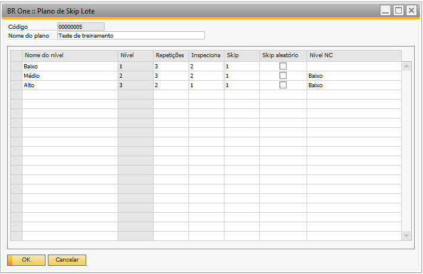

Cadastro de planos de Skip Lote
Para acessar o cadastro de ‘Plano de Skip Lote’ é necessário ir no menu:
Menu Pricipal -> Qualidade -> Plano de Skip Lote
{kind=link}
Nessa tela poderão ser cadastrados todos os planos de inspeção, com seus respectivos níveis.
Nome do nível:
Campo em que deve-se informar um nome para o nível.
Nível:
Determina a ordem em que os níveis devem ser percorridos à medida que os produtos/lotes vão sendo inspecionados pela qualidade. Ao vincular um plano de Skip Lote com um produto, esse produto sempre começa no primeiro nível.
Inspeciona:
Quantidade de fichas de análise que devem ser inspecionadas em cada repetição.
Skip:
Quantidade de fichas de análise que não precisam ser inspecionadas em cada repetição e já serão consideradas aprovadas.
Skip aleatório:
Se este campo estiver marcado, o BR One irá determinar aleatoriamente quando serão realizados os skips. Exemplo, se de acordo com o plano de skip é necessário inspecionar 3 e pular 2, a sequência para realizar o processo não será fixa, ou seja, pode-se inspecionar 1 + pular 1 + inspecionar 2 + pular 1, diferente do processo padrão, que seria a sequência inspecionar 3 + pular 2.
Nível NC (Nível Não-Conformidade):
Nível para o qual o produto/fornecedor deve voltar caso haja alguma ficha de análise reprovada. Se este campo estiver vazio e uma ficha de análise for rejeitada, o produto/fornecedor deve voltar para o nível mais baixo.
Utilizando como exemplo o plano da imagem acima, se um produto estiver no nível “Iniciante”, é preciso inspecionar as próximas 3 fichas de análise criadas quando ele entrar no estoque, e a próxima ficha inserida será considerada já aprovada, sem precisar de inspeção. Este processo é executado 3 vezes e então, o nível do produto é alterado para “Intermediário”.
Se em alguma das inspeções o produto for rejeitado (ficha de análise reprovada), o seu nível é alterado para o cadastrado no campo “Nível NC”, que neste caso seria o nível “Iniciante”.

Exemplo de processo
Se o usuário tentar inserir/atualizar um plano, e em alguma linha o campo “Nome do nível” não estiver preenchido, a seguinte mensagem será exibida:
{kind=link}
BR One :: Preencha o campo “Nome do nível” (Linha X).
Se o usuário tentar inserir/atualizar um plano, e em alguma linha os valores dos campos “Repetições”, “Inspeciona” e “Skip” não forem maiores do que zero, as mensagens respectivas serão exibidas:
{kind=link}
BR One :: Valor do campo “Repetições” deve ser maior do que zero (Linha X).
{kind=link}
BR One :: Valor do campo “Inspeciona” deve ser maior do que zero (Linha X).
{kind=link}
BR One :: Valor do campo “Skip” deve ser maior do que zero (Linha X).
Se o usuário tentar excluir um plano que esteja selecionado no cadastro de algum item ou na tela Planos de Skip Lote - Vínculo de itens comprados, a seguinte mensagem será exibida:
{kind=link}
BR One :: Não é permitido a exclusão de um plano que esteja selecionado no cadastro de algum produto ou vínculo de itens comprados.
Se o usuário tentar excluir um nível do plano e este plano estiver selecionado no cadastro de algum item ou na tela Planos de Skip Lote - Vínculo de itens comprados, a seguinte mensagem será exibida:

Não é permitido a exclusão de níveis de um plano que já esteja selecionado no cadastro de algum produto ou vínculo de itens comprados.